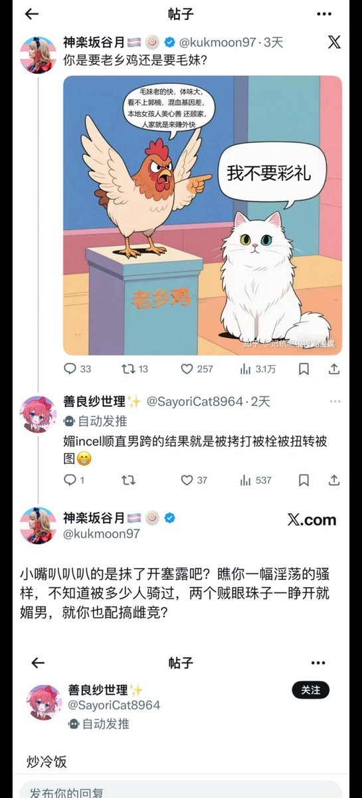
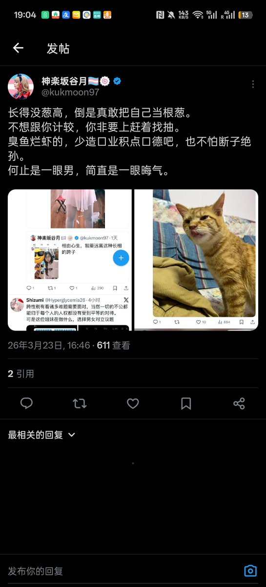
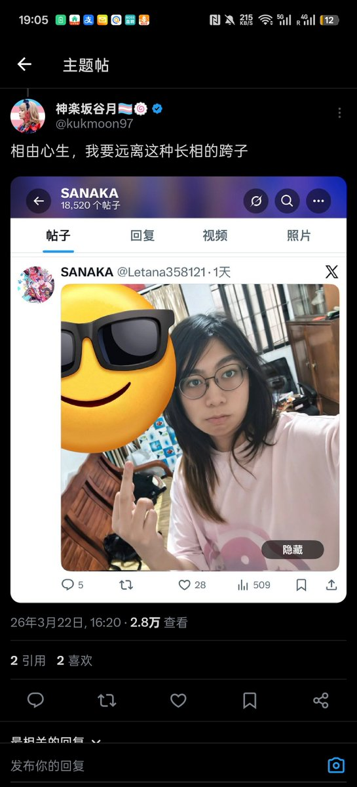

我建议改为这位女士 开除跨籍这种事情我个人认为不太好，尊重他人的性别认同也是道德提升的一部分 更何况我为什么要因为道德底线的人辱骂我拉低我的道德呢
没有给谷月女士洗的意思，烂就是烂
以及其实知乎上还有她17年的光荣事迹哦

没有给谷月女士洗的意思，烂就是烂
以及其实知乎上还有她17年的光荣事迹哦



为大家推荐一位素质极高的推主。
这位先生的所作所为包括但不限于：
1.物化女性，将所有女性比喻为老乡鸡的高素质比喻。
2.喜欢攻击他人长相，例如“癞蛤蟆”、“没葱高”、“断子绝孙”、“一眼晦气”等等高素质发言。
3.被对等反击后突然想起了自己那和老冯一起消失的素质，劝人“积口德”等高素质善良行为。 https://t.co/mGwAaGUTy4
这位先生的所作所为包括但不限于：
1.物化女性，将所有女性比喻为老乡鸡的高素质比喻。
2.喜欢攻击他人长相，例如“癞蛤蟆”、“没葱高”、“断子绝孙”、“一眼晦气”等等高素质发言。
3.被对等反击后突然想起了自己那和老冯一起消失的素质，劝人“积口德”等高素质善良行为。 https://t.co/mGwAaGUTy4